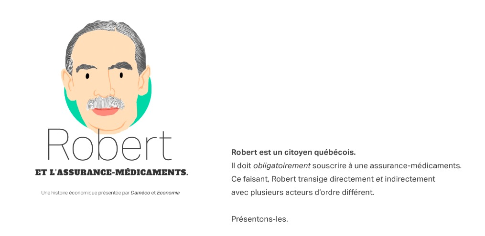
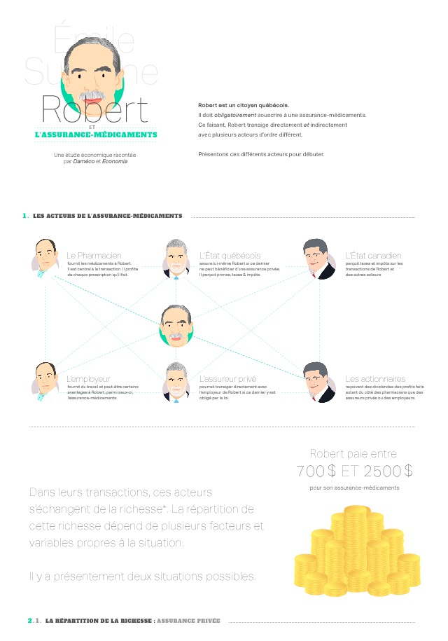
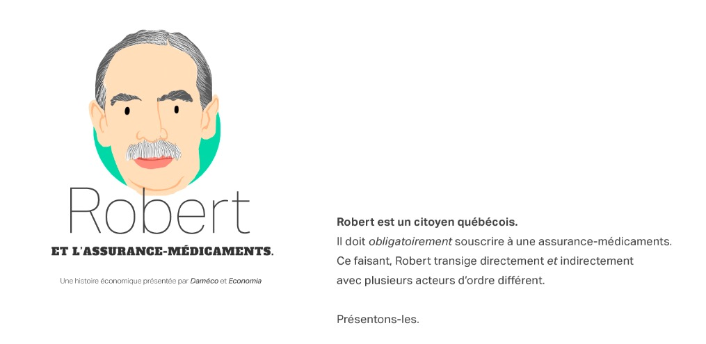
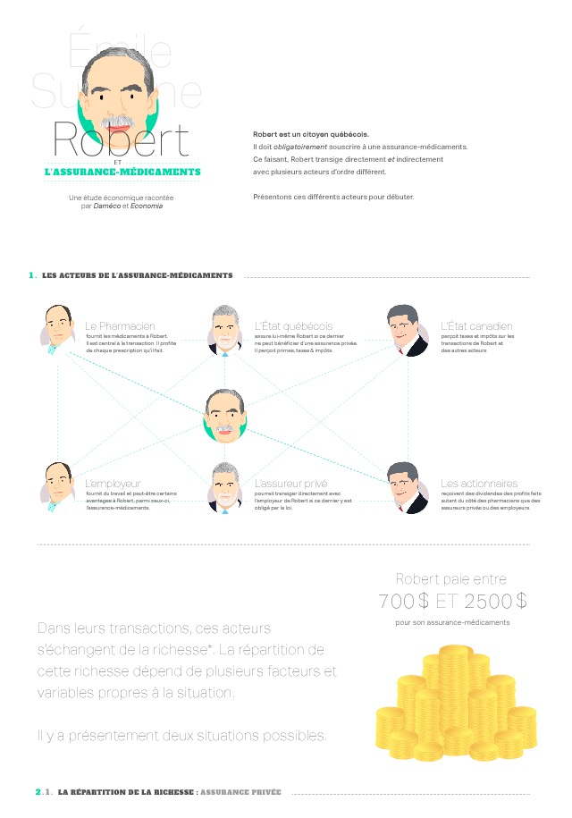

Hearthstone / Sorcery / A Dark room comme inspiration pour le prototype de navigation.
Réflexion sur la typologie / toponymie des différentes dimensions de l'expérience. Tentatives. Élaboration d'un modèle de fiche technique.
Et si on pouvait intéresser la population à l'économique en la communiquant autrement ?
On retrouve de grandes lacunes dans la communication et, voire surtout, dans le design de contenu à saveur économique. Je le constate de première main en en discutant avec mes concitoyens : les informations qu'ils en ont sont bien souvent partielles, partiales. De surcroît, personne ne semble réellement s'intéresser à en designer le discours, la communication, déjà rébarbative car n'adressant généralement que la partie technique, industrielle et mathématique de l'économique. Il y a une grande homogénéité dans le discours économique ; une « guilde » orthodoxe entretenant la même vision mathématique et industrielle de cette science pourtant fondamentalement humaine.
Il en résulte un désintérêt et une mystification marqués. En changeant l'angle d'approche de problèmes économiques pour déplacer l'emphase sur les applications/implications humaines plutôt qu'industrielles puis en leur servant un traitement graphique impliquant une réflexion de design digne de ce nom, peut-être pourrait-on encourager un nouvel intérêt et en démystifier finalement certains aspects ?
Une telle réaction ne manquerait pas d'avoir son effet sur la compréhension et le cadrage d'enjeux politiques. Une meilleure information puis une compréhension plus poussée, motivée par un sain intérêt ne peuvent qu'être bénéfiques au processus démocratique. C'est pourquoi donc ce mémoire propose de s'attarder à la manière dont on cadre et traite l'information économique afin d'en évaluer la capacité à susciter compréhension et intérêt. Rendre cette information plus légère, moins étrangère ; encourager l'interaction et la découverte non-linéaire des liens ; traiter esthétiquement ces informations sont des moyens d'engager le citoyen qui apparaissent viables.
Pour ce faire, le développement d'un service interactif de communication économique est envisagé. Ce service offrira diverses activités modulaires permettant l'appréciation de principes, aspects, et angles économiques (p. ex. des chroniques sur l'actualité, des propositions de réformes, l'étude économique de systèmes, des questionnaires de type « boussole électorale », etc.). Toutes ces activités seront livrées sur un ton léger et avec une attitude ludique bien éloignés de ceux employés par les acteurs du discours médiatique. Par exemple, il est envisagé de personnifier le plus possible l'économique en y illustrant histoires et personnages. La découverte à travers la progression ainsi que la mise en scène, dans le contexte des activités, d'économistes célèbres et historiquement influents est une des applications concrètes de cette technique de personnification.
Il sera aussi important de bien mettre de l'avant les implications humaines des concepts et principes économiques abordés. Le coût d'opportunité n'est pas qu'à considérer que lorsque des capitaux industriels ou financiers sont impliqués. Bien au contraire, ce coût est omniprésent ; nous le payons dans toutes les décisions que nous prenons. Ou bien encore : les dynamiques qui émergent au sein d'un marché sont générées de la même façon que ce marché soit composé d'acteurs industriels ou des membres d'une famille. Car oui, une famille est un marché et on peut remarquer, relever le fonctionnement d'un marché au sein de ce groupe.
On peut donc aborder les fondements, principes et concepts du marché à l'aide d'exemples strictement humains, bien loin des images industrielles et mathématiques généralement utilisées pour le faire. Economia se doit de traiter de l'économique de cette façon autant qu'elle, en tant qu'expérience, se doit d'en designer efficacement l'information. Economia misera sur son interface interactive, sur des incitatifs complémentaires ainsi que sur la portabilité numérique pour assurer son efficacité.
Hearthstone / Sorcery / A Dark room comme inspiration pour le prototype de navigation.
Réflexion sur la typologie / toponymie des différentes dimensions de l'expérience. Tentatives. Élaboration d'un modèle de fiche technique.
Esquissage. Je ne suis pas très discipliné dans cette phase d'exploration. Je dois vraiment travailler là-dessus : je n'esquisse pas assez.
iceScrum. Rencontre avec M. le professeur : toujours partir de la vie réelle vers le concept et non l'inverse. !important
Inspirations de visualisation. Google. Designspiration. Voir si d'autres ont tenté de représenter graphiquement une expérience aussi complexe.
Difficile de me poser.
Je regarde pour une solution efficace pour les captures d'écran. Je me dis que ce serait une bonne méthode de conserver mes recherches et étapes de production. Je veux pouvoir nommer les images « en direct ».
Trouvé ! : Sharpshooter
J'ai commencé à illustrer Karl Marx. Je recherche différents styles. Plus cartoon... ou plus illustration caricaturale mais évoluée...
Mon ami Nicolas insiste sur le fait que c'est beaucoup... Que je devrais peut-être me concentrer sur les activités. En faire une ou deux dès maintenant plutôt que de tenter de tout conceptualiser et modéliser l'expérience complète avant de commencer...
Caricatures de Marx. Plusieurs styles. Tests avec la fonction liquify de photoshop que je ne connaissais presque pas. Malade ce quon peut faire avec ça.
Marx encore. J'ai bifurqué vers le cartoon. Je voulais éviter ce style. Je le trouve facile. Et cliché. Mais ça semble fonctionner. C'est évocateur, facile à gérer, etc. Je crois bien que ce soit une avenue efficace. Je n'ai qu'à laisser mes goûts personnels de côté...
Je dois résoudre le design puzzle de la structure « rhizome ». Je dois designer chaque partie, pour chaque type de contexte et en faire un tout cohérent. Je vais résoudre les problèmes des activités avant. Je dois voir mes composantes comme étant indépendantes mais en relation. Elles doivent pouvoir être représentées de toutes sortes de façons.
J'ai toujours trouvé qu'en tant que designer, je me lançais trop vite dans la production, sans trop avoir esquissé et structuré. Je voulais le faire. Mais avec les recommandations du professeur et ma propre envie de sauter dans le look j'ai écarté une partie de l'étape de structure au profit de la conception visuelle.
Expérimentation avec les Viewport Units. Design graphique de la page d'accueil d'une activité. Les viewport units semblent bien se comporter jusqu'à présent. Mais clairement, leur « implémentation » divergera d'un navigateur à l'autre...
Exploration de l'espace L.A.B. dans Photoshop. Les filtres, et les modes de fondus ne réagissent pas de la même façon. La composition chromatique de leurs résultats apparaît beaucoup plus riche qu'elle ne l'est dans les espaces RGB ou CMYK. La barre HUE dans Hue/Saturation est beaucoup plus stable dans sa luminosité. Il est clair que la perception de richesse ajoutée provient de cette gestion différente de l'espace : les couleurs s'y comportent selon leur « luminance » et non leur « luminosité ».
Je joue dans Photoshop et me dis que les pages d'intro pourraient avoir des questions formulées dans le quotidien qui s'animent... changent... À voir.
J'ai reçu une beau défi de mon ancien professeur d'économie. Une étude économique à designer. Il s'agit d'un circuit économique dont la représentation visuelle est terrible (désolé, M. le professeur). L'étude n'intéressera personne tant et aussi longtemps qu'on ne l'aura pas « habillée » de façon à séduire... Il faut démontrer en quoi ça touche le commun des mortels.
Après quelques heures de recherche, je constate que la mode des visualisations interactives ne s'est pas appliquée au modèle du circuit économique. Ceux-ci sont toujours représentés de la façon la plus primitive, bien éloigné de ce qu'on pourrait considérer comme une réelle réflexion de design.
Je fais le tour des cartoons économiques sur youtube. Videoclips. Keynes vs. Hayek.
Je joue avec le iPad. essaie d'en ressentir l'utilisation. Que fait-on le plus souvent ? Est-ce agréable..? Etc.
Recherche sur les jeux de table. Tombé en recherchant sur une interface de jeu de table pour iPad qui est en alvéole. Ravive l'intérêt eut pour une image d'alvéoles. Pourrait être intéressant de créer une mosaîque d'acteurs en haxagones (alvéoles).

Je lis Josef Müller Brockmann. La grille. Comment la monter. D'un grand intérêt. Je n'ai aucune excuse. Ç'aurait dû être lu avant.
J'ai dessiné pas mal. Commencé le « layout » de l'étude économique. Je dois développer une technique d'illustration efficace. Déjà, le look simple, permet d'illustrer assez rapidement. La technique n'est toutefois pas au point. Je devrais regarder Illustrator voir s'il pourra me permettre d'accélérer la cadence.
 



Henri a aimé. Les interactions seront primordiales.
Je regarde les librairies d'animation SVG. Parce que j'aimerais bien animer (entre autres) les visages des personnages. J'explorerai assurément ces techniques et librairies : GSAP et SMIL et CSS. Faudra regarder l'efficacité. SMIL est pas mal plus complexe car il permet les morphs. CSS... pas de morphs mais simplicité. Est-ce que les morphs seraient vraiment nécessaires ? Je dois faire quelques recherches sur les morphs...

Ça fait longtemps... Travail et vie. Mais bon. De retour. Paper JS. Pourrait être intéressant pour gérer en direct les interactions plutôt que d'en « canner » tous les éléments dans un SVG... La fonction d'importation SVG en tant qu'objets est prometteuse. À garder en tête.
Je lis sur le design. Il est difficile présentement de me retrouver dans la conception de l'étude économique. J'ai l'impression de ne plus voir clair.
Je vectorise mes personnages. C'est long quand même. J'ai l'impression de ne pas être efficace. Je dois trouver une meilleure méthode si je veux que cette entreprise d'illustration/animation soit viable.
J'ai téléchargé les essais de deux logiciels vectoriels pour m'aider à faire mes personnages et animations SVG. Illustrator ne fait pas un bien bon travail d'exportation... Je teste Sketch. Pas habitué. Les SVG sont compliqués à exporter on dirait bien... J'essaie aussi Affinity Designer.
Je teste les transferts d'un format à l'autre...
AI -> Sketch -> Affinity
Je crois bien que Affinity Designer soit le meilleur... le code SVG est clairement de meilleure qualité.
Je tente de concevoir un système d'animation faciale en SVG. La méthode est encore à élaborer... Je teste. Je dois produire les animations pour en constater la qualité. Est-ce mieux si les visages sont séparés et que je les fonds l'un dans l'autre ? Ou devrais-je plutôt grouper chaque partie du visage pour pouvoir la cibler et la manipuler individuellement ? Est-ce que le morph pourrait être une option viable ?
Il faut bien séparer les concerns... et ça devient excessivement touchy. L'animation SVG, tout particulièrement le morph, est délicate et chronophage. Je dois réfléchir à sa pertinence.
Affinity Designer est assurément une alternative viable à Illustrator. Je tente de revoir le design de l'étude... Je refais vectoriellement les personnages. Je dois focaliser sur le circuit en tant que tel je crois bien.
Design du circuit. Préparation pour l'exportation. Je dois tout nommer pour ensuite être en mesure de cibler chaque élément discrètement.
Beaucoup de travail. Vectorisation fastidieuse. Mais je crois tout de même avoir trouvé une façon plutôt efficace mais qui, malheureusement, demande l'utilisation de Illustrator, les fonctionnalités de Affinity Designer n'étant pas encore assez développées de ce côté.
Crayon -> Join -> Simplify -> Ajustements
Je viens aussi de me rendre compte qu'on pouvait fixer les dimensions du SVG en EM ce qui nous permet de les gérer relativement. À explorer...
Cela dit, il y a tout de même des problèmes potentiels quant à l'exportation du SVG depuis Affinity Designer... Si je mets à jour le SVG de manière directe et que par la suite j'ai besoin de le modifier dans le logiciel au lieu du code, j'aurai perdu tout ce que j'avais rajouté... Il faudra trouver un méthode adéquate de bonification du SVG en lui touchant le moins possible, voire aucunement. L'intégration à partir de la balise <object> et sa modification en javascript pourrait être une piste de solution... L'introduction d'une étape « build » à l'aide de node.js, par exemple, pourrait en être une autre. Cela dit, pour que cette nouvelle étape en vaille la peine, on devrait la bonifier an ajoutant au moins quelques autre opérations (p. ex. le retrait des attributs «style» afin d'en faire une vraie feuille de style, l'ajout de classes pertinentes aux nœuds, etc.).
La nomenclature sera extrêmement importante afin que je puisse cibler efficacement les éléments de même type (p. ex. les flèches ou les montants) et ainsi les animer, afficher, cacher, etc.
Je commence à modifier le comportement du SVG. Plusieurs fonctionnalités devraient fonctionner en théorie. Reste à voir si c'est le cas en pratique.
Je dois ajouter dynamiquement la feuille de style au SVG qui lui a été intégré à une page Web. La raison est la suivante : je ne peux en aucun cas modifier le code SVG puisque Affinity Designer retirera tout ajout lorsque le SVG sera modifié. J'essaie donc une technique d'ajout de CSS à partir de Javascript.
On doit absolument servir le SVG et le HTML d'un serveur pour que ça fonctionne... Le protocole file:// ne fonctionne pas.
Il y a plusieurs obstacles à la gestion et manipulation du SVG par Javascript. Premièrement, jQuery ne fonctionne pas totalement avec SVG : plusieurs de ses fonctionnalités les plus utilisées ne peuvent comprendre le langage SVG et sont donc inopérantes. (Voir peut-être les plugins tiers à cet effet...). D'autres encore ne fonctionnent pas lorsque le fichier SVG est intégré à la page à l'aide d'une balise <object>.
Les filtres CSS ne semblent pas fonctionner sur les éléments SVG. Les effets sont appliqués seulement si l'ancre est HTML (la balise <object> par exemple)
Des problèmes de spécificité peuvent aussi surgir. Le fichier SVG pondu par Affinity Designer intègre ses styles à même les balises, ce qui leur donne préséance sur tout ce que je pourrais faire... Pour l'instant, le drapeau/commande CSS !important fait le travail mais c'est loin d'être idéal.
Firefox ne prend pas en charge correctement la propriété CSS transform-origin, absolument nécessaire à l'agrandissement interactif de n'importe quel élément. Il s'agit d'un bogue documenté qui sera, espérons-le, chassé puis bientôt écrasé....
Je dois optimiser l'espace pour les dimensions d'un écran généralement à orientation paysage.
Affinity Designer ne permet pas d'exporter des SVG transparents, ajoutant une couche de complexité pour gérer les styles qu'il écrit en attributs dans le fichier. Sinon, cette méthode fonctionne plutôt bien. La gestion et la nomenclature sont facilitées. Mais le problème de styles pose un dilemme... utiliser !important ou les retirer en javascript ? Je choisirai celui qui sera analysé comme le plus « propre ».
L'illustration peut vivre, accumuler les détails et animations. Elle devient évolutive et peut donc être bonifiée, en direct, en impliquant que très peu d'efforts, ceux-ci ayant été déployés en aval, lors de la création et, surtout, de la préparation de l'illustration. Il en résulte un produit dont la valeur se renouvelle facilement.
Les animations sont plutôt intensives en calculs et augmentent en conséquence la charge sur le processeur. Il faut trouver un moyen de les faire « jouer » seulement lorsqu'elles sont dans l'écran. Javascript sera de mise.
Toutes ces technologies ne sont pas tout à fait au point et commandent un travail considérable pour en pallier les lacunes. L'exportation, l'animation, les limitations jQuery, les implémentations ont tous des déficiences (probablement temporaires). Cela dit, l'effet qu'elles procurent si on en fait bon usage, la facilité avec laquelle on peut bonifier les produits qu'elles créent en font décidément des outils à considérer et explorer...
Après plusieurs tentatives et quelques heures de recherche, j'ai finalement trouvé ce qu'on appelle un « shim » dans le jargon pour pallier les lacunes de support de jQuery pour le SVG. jQuery ne peut interagir directement avec les nœuds SVG étant donné leur spécification différente du HTML. Ces spécifications « brisent » les méthodes de jQuery les plus pratiques (l'ajout de classes en fonction de l'interaction, par exemple). Je devais trouver un moyen de contourner cet obstacle. Reste à voir si la solution en question est robuste...
Beaucoup de design. Le design est messy... On doit revoir à maintes reprises l'architecture du document au fil des différentes itérations. L'organisation des différents éléments dans Affinity Design est centrale à la production d'un fichier SVG qui soit efficacement manipulable. Cette organisation doit tenir compte de tous les comportements et interactions des différents éléments de design. Son élaboration est délicate. Elle demande réflexion et temps.
Je m'étais perdu en cours de route. Après avoir discuté avec prof Richelle (qui s'en est rendu compte sur le champ...) je m'étais égaré dans une approche linéaire, sans y réfléchir, alors que, depuis les tout débuts disons-nous que la non-linéarité de l'activité est centrale. Intéressant de voir comment on peut oublier nos fondements à travers le temps et la brume du quotidien. Bref, je revois encore l'interface de progression afin de la fonder dans le circuit comme tel, et non dans un parcours « suggéré ». Retour aux sources. Cela me rappelle que je dois voir plus souvent Prof Richelle.
Je vectorise encore des personnages...
J'ai fait tous les yeux de la même façon. Il s'agira d'un beau test de la capacité à utiliser la répétition d'éléments pour appliquer des animations facilement.
Animation des yeux cannée... Ce fut en effet excessivement aisé. J'ai même pu reprendre le code développé antérieurement pour animer mon propre visage. La clef réside dans la nomenclature.
Et si je changeais les états SVG non pas en modifiant dynamiquement les éléments pertinents d'un SVG les contenant tous mais plutôt en créant de multiples fichiers SVG nommés selon leurs états et que j'interchangerais tout simplement dans la balise <object> servant déjà de « carré de sable » ?
Piste à explorer aujourd'hui car potentiellement plus efficace...
Il y aura eu beaucoup de travail fait et refait à cause du manque du contenu lors du design. Le contenu réel est toujours un peu voire très différent de celui envisagé. Il en résulte une « perte » de temps substantielle. À l'avenir, il sera avisé de bien établir le contenu réel avant de commencer la phase de design. Non pas seulement des approximations...
Je dois m'affirmer plus dans mes relations de travail. Je dois m'imposer.
Je design présentement la carte conceptuelle de l'expérience... Ce que je voulais faire au début de la session mais qui fut relégué au second plan avec la réception de l'étude économique.
L'intégration de SVG dans le HTML à l'aide de la balise <object> cause son lot de problèmes. Il est mieux je crois, au final, de l'introduire dans la page directement. Ainsi, la sélection des éléments au sein dudit SVG est grandement facilitée.
On repart. J'ai gardé le circuit mais ai enlevé tout ce qui était interface afin de me défaire de mes schèmes de pensée. Je dois designer la « découverte » du circuit. Revenir à l'essence non-linéaire das la découverte... Ouf.
On ne peut pas utiliser les objets externes dans Affinity Designer tout en voulant les exporter en SVG. Si on intègre à la manière des « smart objects » les éléments qui se répètent (la flèche de transaction, par exemple), l'exportation en fait des images base64 et non des nœuds SVG comme il le fait si on créé les objets à l'intérieur même du document. C'est dommage. C'eût été une façon efficace de gérer les objets à l'aide d'instances.
Les transactions prenaient trop d'espace dans la table... On pouvait comprendre sans qu'elles relient tout l'espace entre chaque acteur. Les petites flèches en disent autant tout en étant plus intéressantes visuellement (la composition est aussi améliorer) et en laissant un espace à utiliser ua milieu de la table.
Quelques changements encore et nous serons prêts à présenter un prototype...
Motivé par le franc désir de designer de l'information socialement pertinente (plutôt que du bruit ou du contenu sans substance) et mon intérêt toujours grandissant (mais peu partagé) pour l'économique et ses ramifications, j'ai développé au fil du temps, cette vision de design économique. Elle présente deux volets. Elle est à la fois le design d'information et concepts économiques et l'introduction consciente de considérations économiques dans le processus du design qui trop souvent les écarte alors qu'elles sont aux centre de la réflexion nourrissant le « bon » design. L'efficacité y joue un rôle central : « Good Design is as little design as possible », dit-on. C'est donc habité de cette vision que je décidai de m'attarder à la création d'un service interactif de communication économique qui soit esthétique, léger, ludique, tout en étant voué à la promotion et à la démystification de concepts, principes et phénomènes économiques. Plusieurs types de contenus modulaires sont considérés, pouvant être diffusés de différentes façons. Il faudra assurément faire des choix dans le cadre de la maîtrise car je ne crois pas pouvoir tout développer. Cela dit, rien n'empêche de développer les activités (le cœur de l'expérience) en fonction de leur intégration éventuelle au sein d'un ensemble plus complexe où récompenses et compléments sont intégrés. Je verrai...
Au début de la session, je prévoyais travailler presque uniquement sur cette structure, sur la définition de la constitution de l'expérience globale. Bon, comme la vie peut souvent nous surprendre, ce ne fut pas le cas. J'aurai eu, malgré tout, le temps cet été de réfléchir à la constitution de l'expérience, du « service ». Mais cette réflexion pris assez rapidement un rôle secondaire alors que le design concret d'une étude économique (réalisée par un ancien professeur d'économie qui me suit de près) devint l'activité principale de ce séminaire. Ce fut une réorientation des plus bénéfiques. Le design concret d'un type d'activité envisagé dans l'expérience m'aura amené à expérimenter, tester et apprendre beaucoup plus que je ne croirais avoir pu le faire en focalisant sur la structure de l'expérience. Cela m'aura permis tout particulièrement de tester la réception, ce qui fut hautement formateur. Les commentaires, critiques et suggestions qui m'auront été faits durant ce séminaire sont d'une grande valeur.
Cela me permit aussi de développer une technique Web d'animation vectorielle et de tester en pratique la théorie SVG pour constater, sans grande surprise, que le support pratique des recommandations théoriques derrière ce format standard est plutôt défaillant. Cela dit, soyons indulgents : il s'agit d'un format somme toute encore récent. L'été m'aura aussi permis de découvrir une alternative prometteuse au monopole de Adobe. J'en retire la conviction, et j'espère demeurer convaincu dans les mois qui viendront, que je ne prêche pas dans le désert. Que les efforts déployés afin d'encourager l'intérêt pour les sujets économiques ne le sont pas en vain, que l'information économique gagne à être designée, un soin que l'on ne lui porte que bien modestement présentement. Encore et toujours motivé par l'efficacité, les incitatifs et la portabilité dans le design, je poursuivrai la conception de ce service interactif de communication économique à en devenir. La vision aura évoluée, se sera développée mais ses fondements demeurent les mêmes.